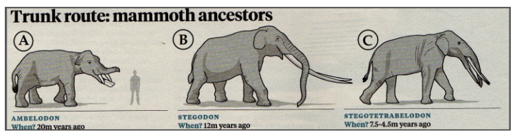

🧠 Top 10 Strategies
1. Titles FirstAlways read the Title to get context immediately.
2. Highlight KeywordsFind keywords (e.g., "3 items", "recommended") before listening.
3. ParaphrasingThe audio will NOT use the exact words. Think of synonyms (Recommended -> Suggested).
4. The "Correction" TrapListen for "But", "However", "Actually". The speaker often changes their mind.
5. DistractorsPhrases like "I'll leave it to you" or "Optional" usually mean it's NOT the answer.
6. All Options MentionedDon't pick the first thing you hear. They usually mention ALL options to trick you.
7. OrderThe options (A, B, C) might not be mentioned in alphabetical order.
8. Answers are LettersWrite 'A', not the full text 'Camera' on your answer sheet.
9. Speed ReadingUse the 20-30 seconds break to read specific questions, not everything.
10. GuessingNever leave a blank. There is no negative marking!
Question Types
Type 1: 3 Option Selection (A, B, C)
Type 2: Long List Selection (Pick 2 or 3 from A-G)
Type 3: Sentence Completion
Type 4: Picture/Logo Selection

Practice 1: Rainforest Excursion
🎧 Rainforest_Track_01.mp3
Questions 4-6: What 3 items are recommended to take with you?
You now have time to read questions 4 to 6. You should prepare your answers before the listening begins. You have 20 seconds. Now, let me give you some information about today’s excursion into the rainforest. We’ll be travelling from here by bus to the park centre. From there, we’ll be heading on foot into the rainforest itself. The walk will be around six miles, and the ground can be quite uneven, so it’s very important that you wear strong footwear, such as a good pair of walking boots. There will be plenty of opportunities to take photographs during the trip. However, I’m afraid that cameras are not allowed in the rainforest. I can also see that many of you have brought binoculars with you. Unfortunately, the forest is very dense in the areas we’ll be visiting, so you may not have many chances to use them. Most of the track will be fairly well shaded, so there’s no need to worry about sunscreen. Mosquito repellent is often useful, but not at this time of year, so you won’t need to bring any. We’ll be walking for several hours, so you should bring some refreshments with you. There are no shops inside the park, so this is essential. I’d also recommend bringing a medium-sized rucksack, as you may want to carry extra clothing and other personal items. Finally, some of you have asked whether you need to bring local currency. The souvenir shop outside the park accepts credit cards, as well as US dollars and euros, so I’ll leave that decision up to you. That is the end of the information for questions 4 to 6.
Correct Answers: B (Food & Drink), D (Walking Boots), F (Large Bag)
1. Walking Boots: "Important that you wear strong footwear... good pair of walking boots."
2. Food & Drink: "Bring some refreshments... essential."
3. Large Bag: "Recommend bringing a medium-sized rucksack."
1. Walking Boots: "Important that you wear strong footwear... good pair of walking boots."
2. Food & Drink: "Bring some refreshments... essential."
3. Large Bag: "Recommend bringing a medium-sized rucksack."
Vocabulary Paraphrasing:
• Recommended -> Essential, Important, You should.
• Walking Boots -> Strong footwear.
• Food & Drink -> Refreshments.
• Large Bag -> Medium-sized rucksack.
• NOT Answers: Camera (Not allowed), Sunscreen (No need), Mosquito repellent (Not this time of year), Cash (Leave decision to you).
• Recommended -> Essential, Important, You should.
• Walking Boots -> Strong footwear.
• Food & Drink -> Refreshments.
• Large Bag -> Medium-sized rucksack.
• NOT Answers: Camera (Not allowed), Sunscreen (No need), Mosquito repellent (Not this time of year), Cash (Leave decision to you).
Practice 2: Health Care Conference
🎧 Conference_Speakers.mp3
Questions 1-3: Who will be LECTURING at the conference today?
Today’s topic under discussion is the health care system both past and present. We have a number of guests for today’s lectures, videos and debates, one of them the notable Dr David Bishop. The morning will be kicked off by Dr Roger Dean who will be presenting his speech summarising the major changes and challenges of the health care system from the year 2000 to around 2012. Following him will be Dr William Benson, who will oversee the debate on today’s problems for hospitals. After lunch, Dr Daisy Mandalay will be showing a revealing video relating to the current trends in health problems faced by today’s society. Dr Christopher Lord will then address everyone on the problems faced by family doctors and the vital role they play in the health care system. Last, but not least, Dr David Bishop, as I mentioned earlier, will take the floor to tell you about his current research. Dr Ralph Morris will be responsible for collecting your feedback on the various parts of the conference at the end of the day. That will conclude our seminars for the day. Tomorrow’s conference details will be put up on the notice board later this afternoon, but you will be pleased to know that Dr George Ripley has agreed to lecture you all.
Correct Answers: A (Lord), B (Bishop), E (Dean)
(E) Dr Roger Dean: "Presenting his speech" = Lecturing.
(A) Dr Christopher Lord: "Address everyone" = Lecturing.
(B) Dr David Bishop: "Take the floor to tell you" = Lecturing.
(E) Dr Roger Dean: "Presenting his speech" = Lecturing.
(A) Dr Christopher Lord: "Address everyone" = Lecturing.
(B) Dr David Bishop: "Take the floor to tell you" = Lecturing.
Distractors (Traps):
• Dr William Benson (Oversee debate - NOT lecture)
• Dr Daisy Mandalay (Showing video - NOT lecture)
• Dr Ralph Morris (Collecting feedback - NOT lecture)
• Dr George Ripley (Lecture tomorrow - NOT today)
• Dr William Benson (Oversee debate - NOT lecture)
• Dr Daisy Mandalay (Showing video - NOT lecture)
• Dr Ralph Morris (Collecting feedback - NOT lecture)
• Dr George Ripley (Lecture tomorrow - NOT today)
Practice 3: Mammoths
🎧 Mammoth_History.mp3

Which type of Mammoth is the lecture going to focus on?
There is evidence of much change and development in the mammoth. We can see the Ambelodon 20 million years ago, the Stegodon 12 million years ago and finally the Stegotetrabelodon, which existed somewhere between 7.5 to 4.5 million years ago. There seem to have been a number of changes in the physiology of the mammoth; the most prominent were in the height, the size of the ears, and the shape of the head and tusks. Today, I’m going to be focusing on the one most of us associate with the ‘so-called’ classic shape and size of a mammoth, which is best known for its huge curving tusks and colossal size.
Correct Answer: B (Stegodon)
The audio mentions all three (A, B, C), but explicitly states "Focusing on... huge curving tusks". This description matches the Stegodon feature.
The audio mentions all three (A, B, C), but explicitly states "Focusing on... huge curving tusks". This description matches the Stegodon feature.
Vocabulary:
• Colossal = Enormous, Gigantic, Huge.
• Prominent = Major, Outstanding.
• Physiology = Make-up/Structure.
• Colossal = Enormous, Gigantic, Huge.
• Prominent = Major, Outstanding.
• Physiology = Make-up/Structure.
Practice 4: Dashford Study Centre
🎧 Study_Centre_Details.mp3
The study center in Dashford was opened to give free educational and recreational services to the community of Dashford. Membership is free for over 65’s as well as for students, as long as they have a student ID. For everyone else, it is an annual membership of 20 pounds. Members are able to enjoy full access to our extensive library, which comprises a comprehensive collection of classic literature, resource books, children’s books, history books, and popular literature. As members, you are able to borrow up to three books at a time for up to four days. Our recreational services extend to both members and non-members, offering social and leisure activities for all age groups. Our yoga, dance, and gentle exercise classes are extremely popular, and booking ahead is required to ensure your place on one of these courses. However, our walking group, which meets once a week, offers unlimited places, but you do need to have a good level of general fitness. We also have IT classes at beginner, intermediate, and advanced levels. For those of you who are more creative, there are arts and crafts classes run by a qualified teacher with volunteer support. Before checking everything, why don’t you take a look around and see what you might be interested in.
Correct Answers: 1(B), 2(B), 3(C)
1. B: Free for elderly/students, others pay 20.
2. B: "Up to 3 books" (Matches Max 3).
3. C: Walking group offers "unlimited places" (Booking unnecessary), while yoga/dance "require booking".
1. B: Free for elderly/students, others pay 20.
2. B: "Up to 3 books" (Matches Max 3).
3. C: Walking group offers "unlimited places" (Booking unnecessary), while yoga/dance "require booking".